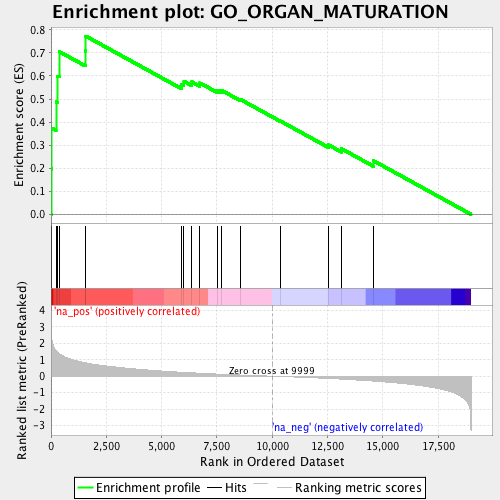
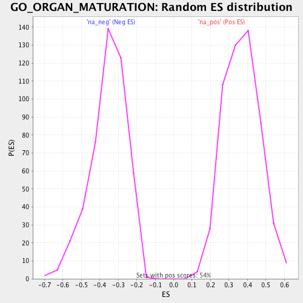

| | | Dataset | EDIC_monocyte |
| Phenotype | NoPhenotypeAvailable |
| Upregulated in class | na_pos |
| GeneSet | GO_ORGAN_MATURATION |
| Enrichment Score (ES) | 0.7725177 |
| Normalized Enrichment Score (NES) | 2.0930135 |
| Nominal p-value | 0.0 |
| FDR q-value | 0.027901841 |
| FWER p-Value | 0.025 |
Table: GSEA Results Summary

Fig 1: Enrichment plot: GO_ORGAN_MATURATION
Profile of the Running ES Score & Positions of GeneSet Members on the Rank Ordered List
| PROBE | GENE SYMBOL | GENE_TITLE | RANK IN GENE LIST | RANK METRIC SCORE | RUNNING ES | CORE ENRICHMENT | | 1 | BMP2 | | | 9 | 2.455 | 0.1974 | Yes |
| 2 | PAX2 | | | 31 | 2.197 | 0.3733 | Yes |
| 3 | ALDH1A2 | | | 224 | 1.542 | 0.4875 | Yes |
| 4 | LEP | | | 298 | 1.439 | 0.5996 | Yes |
| 5 | RYR1 | | | 372 | 1.357 | 0.7052 | Yes |
| 6 | PHOSPHO1 | | | 1546 | 0.811 | 0.7088 | Yes |
| 7 | GATA3 | | | 1570 | 0.806 | 0.7725 | Yes |
| 8 | RET | | | 5892 | 0.239 | 0.5641 | No |
| 9 | RHOA | | | 6009 | 0.231 | 0.5766 | No |
| 10 | FGFR3 | | | 6369 | 0.204 | 0.5741 | No |
| 11 | IGF1 | | | 6730 | 0.178 | 0.5695 | No |
| 12 | GH1 | | | 7541 | 0.125 | 0.5369 | No |
| 13 | PLXNB1 | | | 7695 | 0.117 | 0.5383 | No |
| 14 | FAT4 | | | 8577 | 0.069 | 0.4975 | No |
| 15 | DCHS1 | | | 10365 | -0.018 | 0.4047 | No |
| 16 | ANO6 | | | 12544 | -0.137 | 0.3010 | No |
| 17 | THBS3 | | | 13134 | -0.181 | 0.2846 | No |
| 18 | SEMA4D | | | 14592 | -0.300 | 0.2319 | No |
Table: GSEA details [plain text format]

Fig 2: GO_ORGAN_MATURATION: Random ES distribution
Gene set null distribution of ES for GO_ORGAN_MATURATION